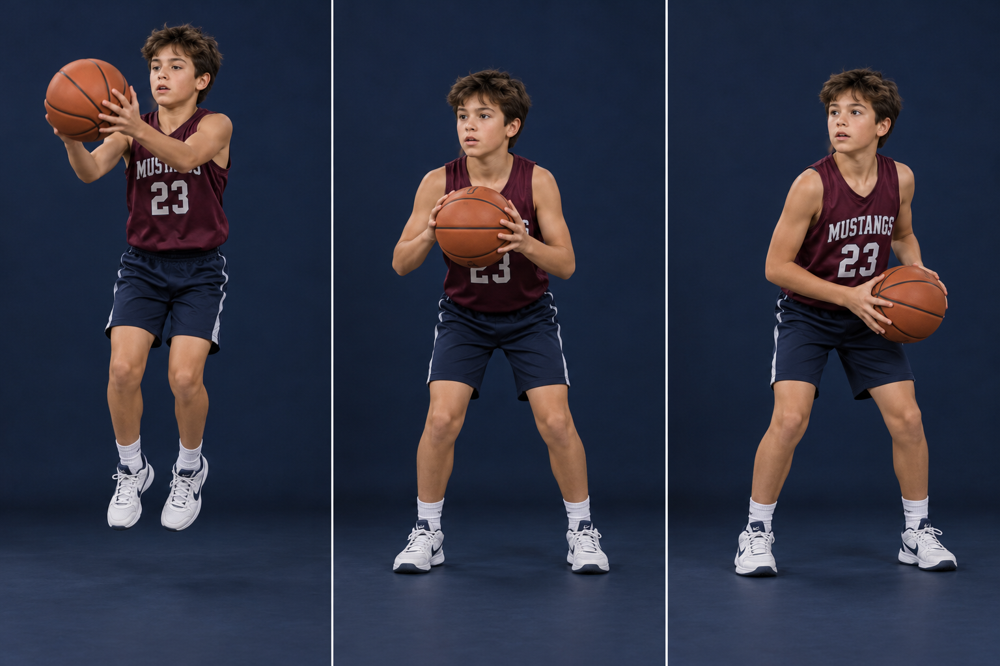

Good footwork makes every next decision easier. This example starts with the player catching while airborne and then landing on both feet at the same time. It is not the same as every possible stop at the end of a dribble.
PHOTO WALKTHROUGH
Clear stills · one action at a time
3 photo steps

01
Step 1 · Meet the pass
STEP 01
Meet the pass
Show a target. Two hands to the ball.
Move into a clear passing window and show your hands. Track the ball into your fingers.
Keep the hop small. Catching is the priority; there is no need for a big leap or an extra step afterward.
Catch this mistake
Waiting for the pass to reach your body with hands down.
02
Step 2 · Land together
STEP 02
Land together
Both feet at once. Knees absorb.
For this airborne-catch example, land on both feet simultaneously with a comfortable base. Stay balanced instead of stumbling into another step.
Either foot may become the pivot in this example. Once one lifts, the other is the anchor. Some other jump-stop sequences do not allow a pivot; learn the difference with your coach.
Catch this mistake
An extra shuffle after landing, or assuming every two-foot stop allows a new choice of pivot.
03
Step 3 · Read before rushing
STEP 03
Read before rushing
Eyes up. Pass, shoot, or drive.
See the basket, defender, and teammates. Shoot if open and in range, pass to an advantage, or attack available space.
If starting a dribble, release the ball before lifting the pivot foot. If pressure closes the gap, protect and pivot instead of panicking.
Catch this mistake
Bouncing automatically before seeing an open teammate.
AI-created photo illustrations for teaching body positions. These are separate stills, not slow-motion game footage. Use the written cues and diagrams for movement direction and rules.
SHOW HANDS → LAND SOFT → LOOK UP
KEEP IT LEGAL
Know the boundary
How and when you control the ball determines your pivot options. A jump stop is not permission for extra steps. This lesson specifically uses an airborne catch followed by a simultaneous two-foot landing.
TRY IT AT PRACTICE
Start slow, then add a read
Partner passes while the receiver makes a low hop catch and simultaneous landing. Coach shows one of three signals: pass to target, balanced shot, or legal first dribble. Do 6 deliberate reps, then rotate.
Ask yourself
What did I see before my first dribble?
Coaching references & teaching notes
These are team teaching adaptations. Sources support the principles; the AI-created illustrations are not official rules diagrams or endorsements. Check your event’s local rules with the coach.